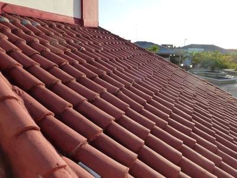

Clay or concrete tile [RMT1]
All types of clay tile and concrete tile roofing. Overlapping and sometimes fastened to wood battens. Also includes flat roofs that are covered with paving tiles (laid over some type of membrane), but does not include stone slabs.

Clay tiles, Cuba (S. Brzev)

Clay tile roof covering, Padang, Indonesia (J. Bothara)

Clay tiles (Mangalore tiles), India (People in Centre)